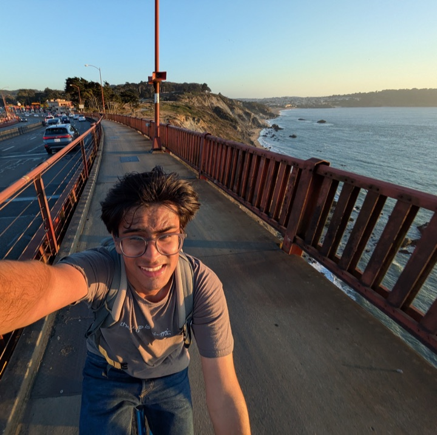

Hi, I'm Yash. I study computer engineering at Waterloo and mainly work on Hacker Fab, where we design & operate our own chip fab tools.
Right now I'm working on an atomic force microscope and learning about img sensors.
Before that I shipped fun web apps built on ai apis, designed pcbs for firefighting drones, and ran linux on my school's ev3s.
I've lived in 10+ cities and shifted schools across India so I find it curious when I'm talking about school to friends who've gone to the same one from kg to 12th grade. These days Im usually in waterloo, and visit the bay every few months ;) I like running, biking, climbing and football. I keep a list of projects.
You can find me as yashkarthik on GitHub; _yashKarthik on Twitter.
This website looks like this because my previous website was 3 years old and quite out of date but I can't find the inspiration to build a new one yet. November 2026.